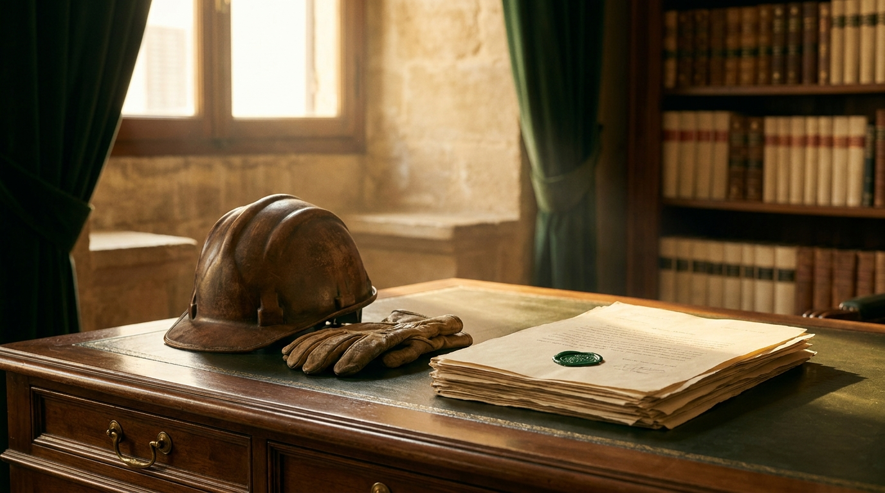

Infortuni sul lavoro: la responsabilità del datore solo formale
Chi risponde quando un infortunio colpisce un lavoratore e il datore titolare è solo una figura di facciata? La Cassazione ha ribadito che la qualifica formale non scherma dalla responsabilità penale. Una pronuncia che pesa su amministratori, prestanome e gestori effettivi, e che impone un ripensamento delle deleghe e degli assetti aziendali in materia di sicurezza.

Il caso e il principio affermato
La Corte di Cassazione, Sezione Quarta, è tornata sul tema della responsabilità per gli infortuni sul lavoro quando il datore titolare riveste un ruolo meramente formale. Il principio è netto: chi assume la qualifica giuridica di datore di lavoro risponde degli obblighi di sicurezza anche se, nei fatti, non esercita poteri decisionali o gestionali.
In altre parole, la titolarità formale non è uno schermo. Chi figura come datore non può difendersi sostenendo di essere un semplice prestanome, perché la legge ricollega a quella qualifica precisi doveri di protezione del lavoratore.
Inquadramento normativo
Il riferimento è il D.lgs. 9 aprile 2008, n. 81, il cosiddetto Testo Unico sulla sicurezza sul lavoro. L'art. 2 definisce il datore di lavoro come il soggetto titolare del rapporto di lavoro o, comunque, colui che ha la responsabilità dell'organizzazione o dell'unità produttiva in quanto esercita i poteri decisionali e di spesa.
Il punto chiave è l'art. 299, che disciplina l'esercizio di fatto dei poteri direttivi. La norma estende gli obblighi di sicurezza anche a chi, pur privo di investitura formale, gestisce in concreto l'attività (il cosiddetto datore di fatto o gestore effettivo).
L'effetto combinato delle due disposizioni è una doppia responsabilità: risponde sia il datore formale, per la qualifica che riveste, sia il gestore effettivo, per i poteri che esercita realmente. La giurisprudenza considera entrambi titolari della posizione di garanzia, cioè dell'obbligo giuridico di impedire l'evento dannoso.
Implicazioni pratiche
La pronuncia ha conseguenze concrete per chi assume cariche di facciata. Accettare la nomina di amministratore o titolare di un'impresa senza esercitare alcun potere reale non riduce l'esposizione penale: la responsabilità per omicidio o lesioni colpose connesse alla violazione delle norme antinfortunistiche resta in capo a chi figura formalmente.
Non basta delegare a parole. Per trasferire validamente gli obblighi di sicurezza occorre una delega di funzioni scritta, con i requisiti previsti dall'art. 16 del Testo Unico: data certa, autonomia di spesa e poteri effettivi in capo al delegato, oltre all'accettazione di quest'ultimo. Una delega generica o inesistente lascia integra la posizione di garanzia del datore titolare.
Per il lavoratore, invece, l'orientamento rafforza la tutela: in caso di infortunio individua con maggiore certezza i soggetti chiamati a rispondere, ampliando la platea dei responsabili anziché restringerla.
Cosa fare in concreto
- Verificate la coerenza tra ruolo formale e poteri reali. Se siete titolari di una carica datoriale, accertatevi di disporre effettivamente dei poteri decisionali e di spesa connessi agli obblighi di sicurezza.
- Formalizzate le deleghe di funzioni. Predisponete deleghe scritte conformi all'art. 16 D.lgs. 81/2008, con data certa, attribuzione di autonomia di spesa e accettazione del delegato.
- Mappate la posizione di garanzia. Individuate con chiarezza chi, all'interno dell'organizzazione, esercita i poteri direttivi di fatto, per evitare zone grigie di responsabilità.
- Aggiornate il modello organizzativo. Riconsiderate il documento di valutazione dei rischi e gli assetti di vigilanza alla luce dell'effettiva distribuzione dei poteri.
- Evitate cariche meramente formali. Non accettate nomine di prestanome confidando nell'assenza di poteri gestori: la responsabilità penale segue la qualifica.
La lezione della Corte è essenziale. Nel diritto della sicurezza sul lavoro contano sia la forma sia la sostanza: l'una determina la qualifica, l'altra estende gli obblighi. Chi opera in posizioni apicali farebbe bene a trattare entrambe come fonti di responsabilità, non come alternative tra cui scegliere.
---
*Contributo informativo a cura di Tamburro & Partners - Avv. Giuseppe Tamburro. Non costituisce parere legale.*
Ogni storia di lavoro ha i suoi tempi.
Se gestisci HR e vuoi un confronto su contenzioso, ispezioni o licenziamenti, scrivi allo studio. Ti rispondiamo entro un giorno lavorativo.